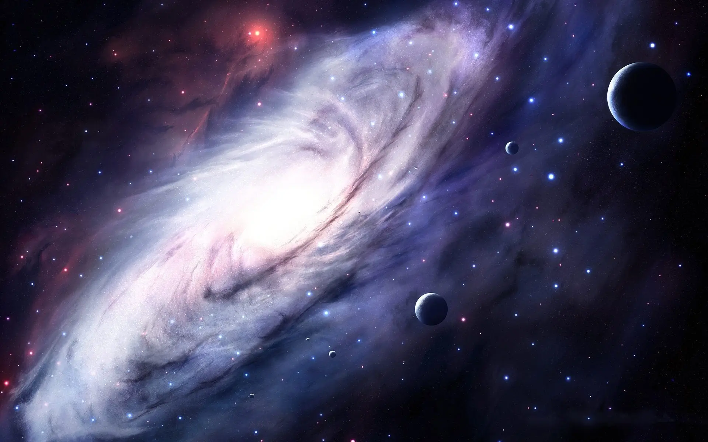

所有浪漫中，关于"宇宙"的浪漫总是史诗级别的
我很爱这个光怪陆离又不乏浪漫的多样宇宙。有恒星的死亡、星尘的飘散，也有宇宙的广袤、星球的绚烂，这些过于宏大的想象，让我们自知渺小，又无畏渺小。虽然我们的日子多是细碎庸常，悲苦总比欢喜绵长。但幸好有宇宙星空可仰，盛大又寂寥的死亡、孤寂又永恒的旋转、微弱但不停的光芒，都是在提醒所有的微不足道，治愈大多的无奈苦楚。
理论物理学家劳伦斯·克劳斯说"你身体里的每一个原子都来自一颗爆炸了的恒星。形成你左手的原子可能和形成你右手的来自不同的恒星。这是我所知的关于物理的最有诗意的事情--
你的一切都是星尘"。

“我们活在银河系里的一个宁静的角落，我们的家是太阳系。一个四十五亿年的构造，绕着银河系中心。以二十万公里/时公转，每2.5亿年公转银河系一周。大家好！我们是太阳系，初次见面，很高兴认识你。”
太阳系是什么？
其实太阳并不是我们肉眼见到的样子，它的神秘远远超出我们的想象。太阳是太阳系的中心天体，太阳系包括太阳、行星及其卫星、矮行星、小行星、彗星和行星际物质。
太阳系的行星兄弟
太阳还有八大兄弟，除了我们熟知的地球之外，还有水星、金星、火星、木星、土星、天王星和海王星，每一颗行星都有自己的轨迹，在自己的轨迹上闪闪发光。